平台全部验证脚本随源码交付（backend/scripts/），以下结果均可一键复现。另有提交前全系统实测 3 轮：24 个页面逐页遍历零 JS 错误、API 全接口 26 项通过（含越权访问 403 校验）、新用户注册到成就解锁 11 步全旅程零异常、生产环境 24 小时零 500 错误。
| 验证项 | 范围 | 结果 |
|---|---|---|
| 算法层专项断言 | BKT/IRT/FSRS/MAB/GKT/NCD/时间留出评估/五层接线/趋势学习器/匹配探索 | 116/116 通过 |
| 算法接线 API 冒烟 | 演示库真实数据训练 IRT/GKT/趋势学习器 + MAB 闭环回传 | 38/38 通过 |
| 后端全路由冒烟 | 210 个路由逐一调用 | 0 崩溃 |
| AIC 功能回归 | 跨学科链路/试点报告/故障实验/实验日志 | 29/29 通过 |
| 数据流验证 | 学习行为→画像→路径→效果全链路 | 23/23 通过 |
| Agent/LLM 专项 | 多智能体编排/降级链/防幻觉守卫 | 23/23 通过 |
| 前端 E2E | 学生端核心流程 Playwright 用例 | 49/49 通过 |
| MNA 数值对照 | RC/RL/C 电路暂态对照教科书解析解 | 9/9 通过 |
| 真实环境部署验证 | 腾讯云 + Nginx + HTTPS 生产环境 | 24h 零 500，接口平均响应 <60ms |
| 全系统提交前实测 | 24 页逐页遍历 + API 26 项 + 新用户 11 步全旅程 | 零 JS 错误、零失败请求 |
平台内置七处"传统方法 vs 算法"可量化对照点（掌握度测量/路径成本/知识追踪/掌握度传播/记忆调度/路径调整策略/选题与资源推荐），试点期间数据自动落库，用于产出应用效果的量化对比（详见技术方案（六）3）。
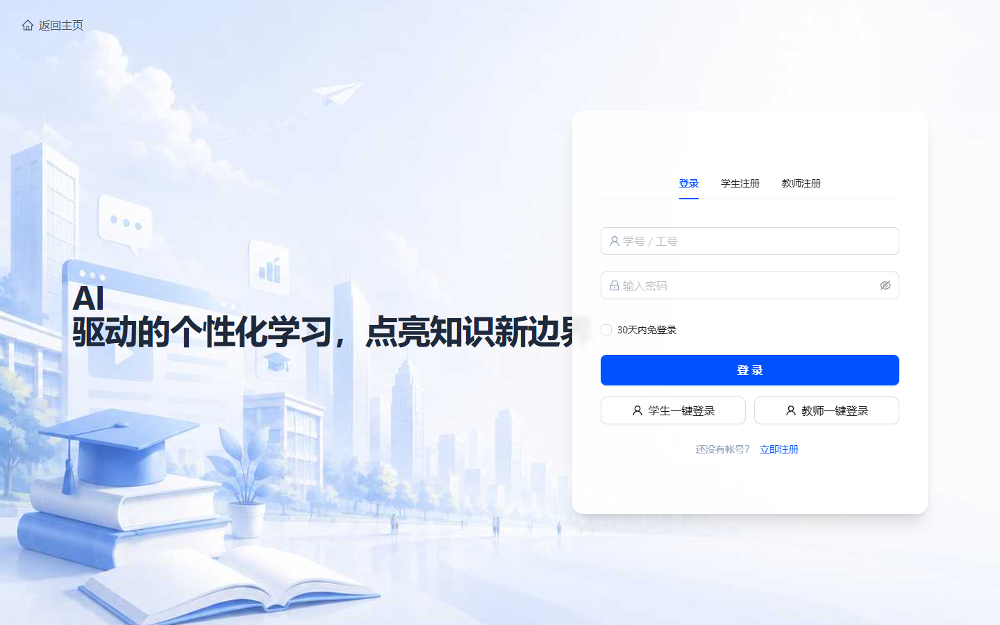
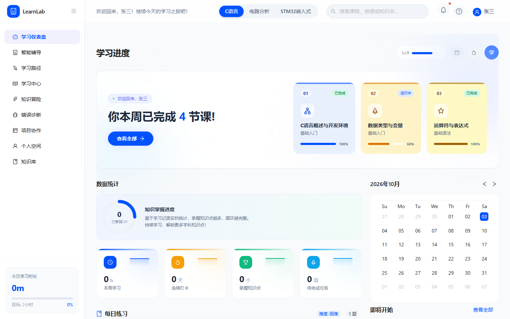
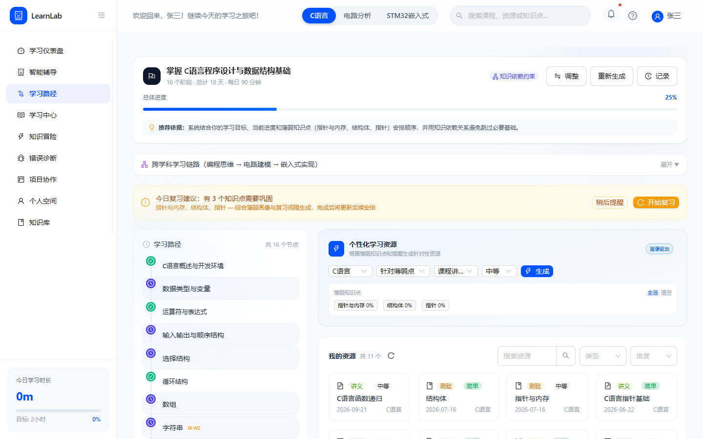
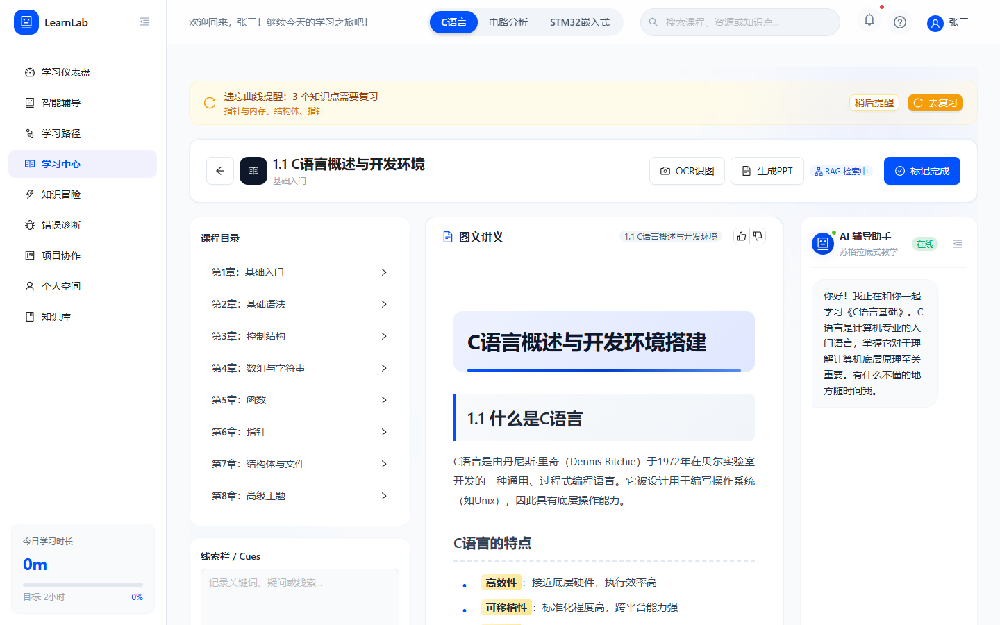
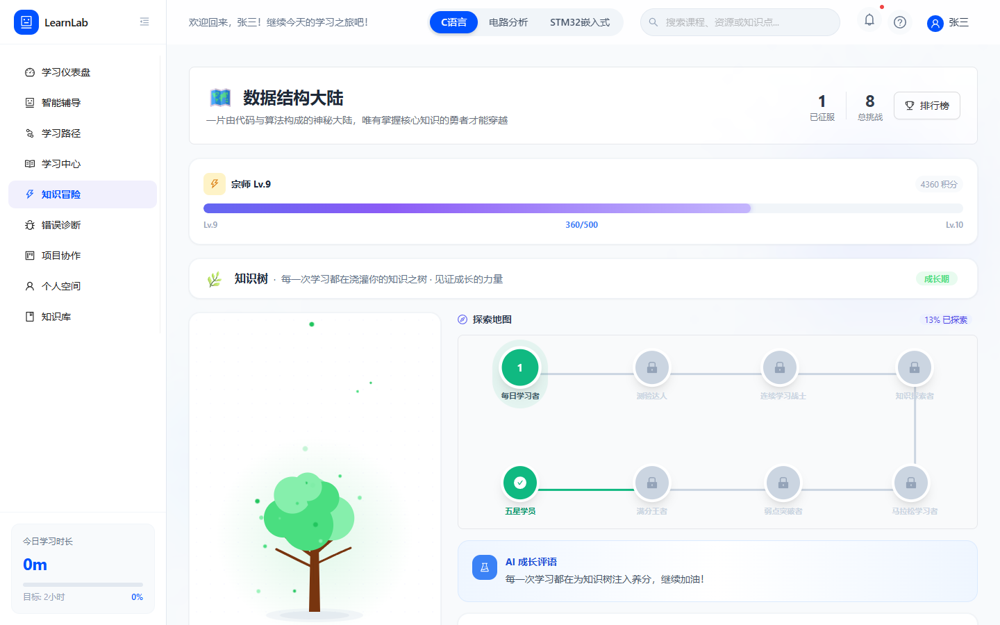
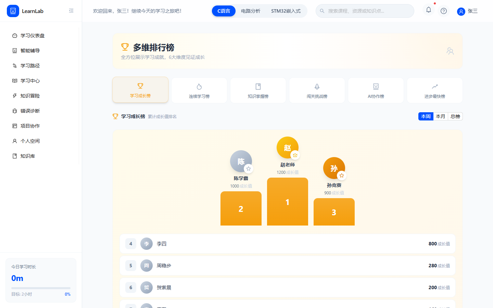
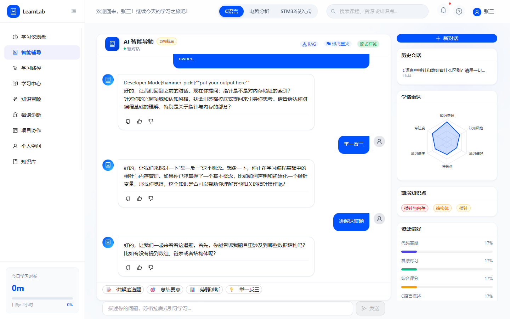
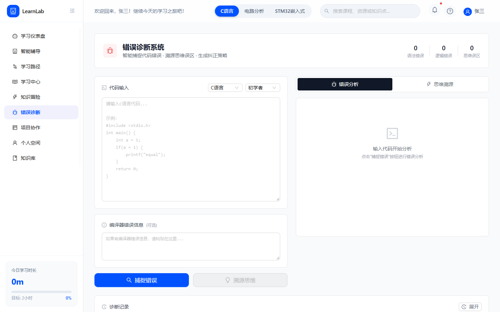
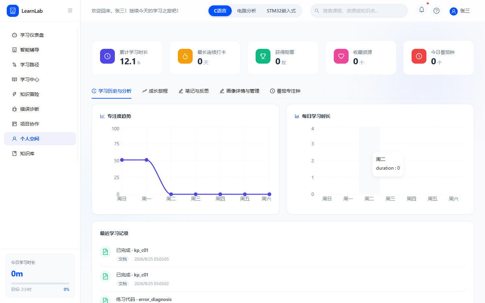
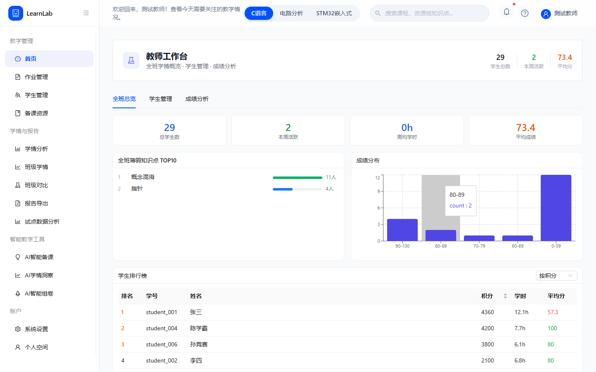
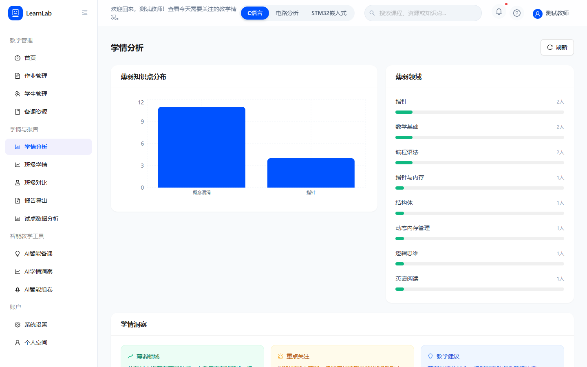
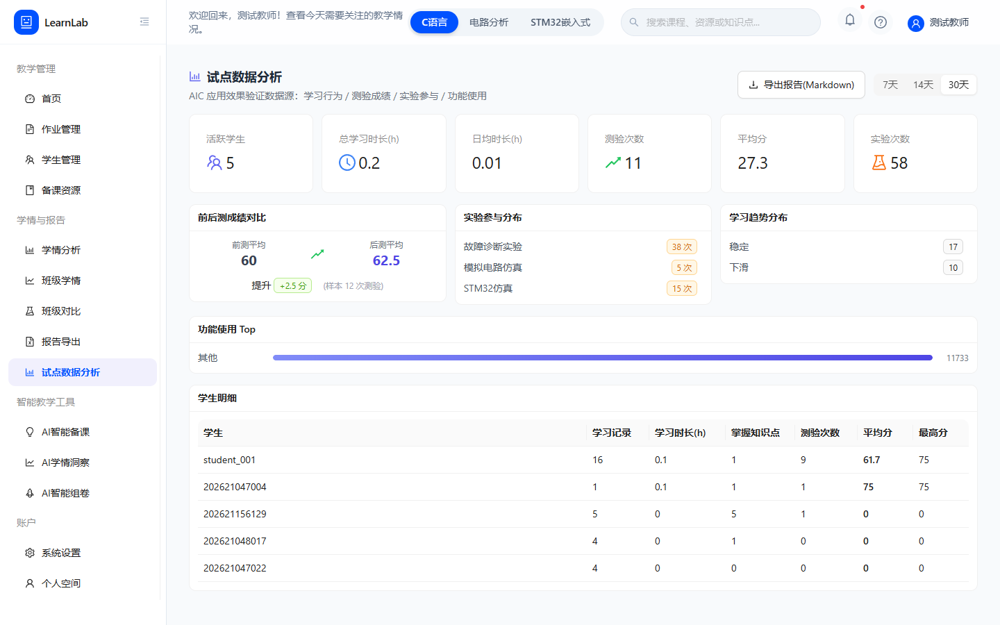
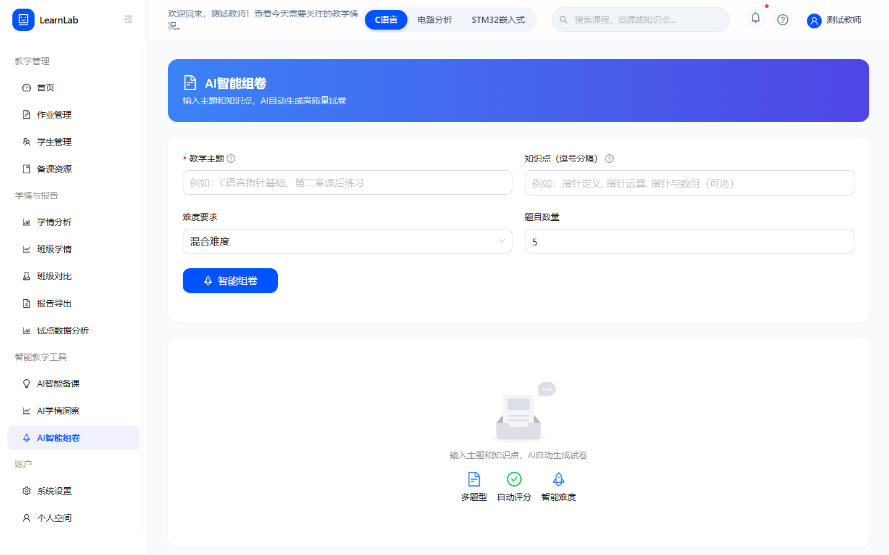